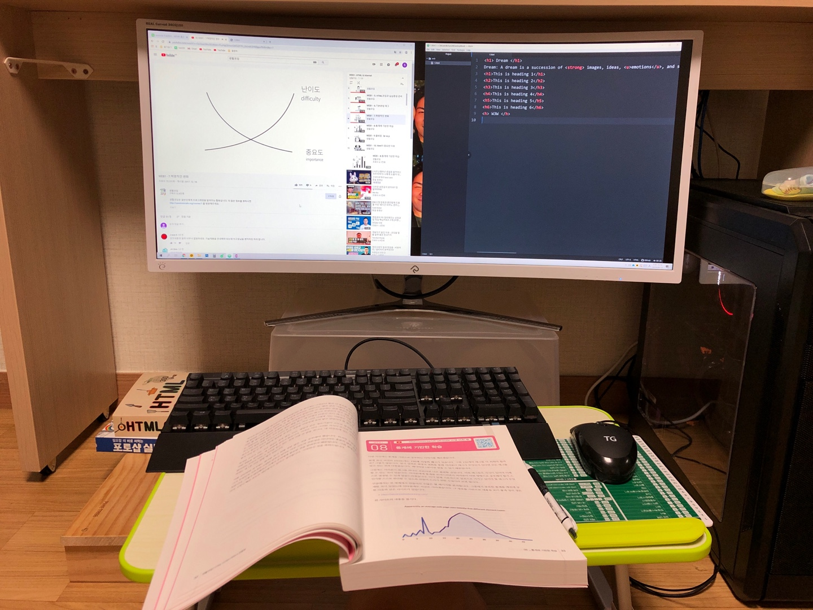

- HTML
- CSS
- JavaScript
CSS
Hypertext Markup Language
과거에는 HTML에 디자인적 요소를 포함하여 작성하는 것이 일반적이었다. 다시 말해서 온갖 레이아웃, 디자인 정보를 HTML 안에 욱여넣다 보니 HTML의 본연의 목적인 구조화된 문서가 아닌 디자인을 위한 문서로 전락하고 말았다. 표를 작성해야 하는
태그가 레이아웃을 구성하는 용도로 쓰이는 등으로 인해 HTML 소스코드만 보면 이 문서가 어떤 문서인지 전문가조차 알기 힘든 상황이었다.[2]

Dreams mainly occur in the rapid-eye movement (REM) stage of sleep—when brain activity is high and resembles that of being awake. REM sleep is revealed by continuous movements of the eyes during sleep.
This is heading 1
This is heading 2
This is heading 3
This is heading 4
This is heading 5
This is heading 6
W3W